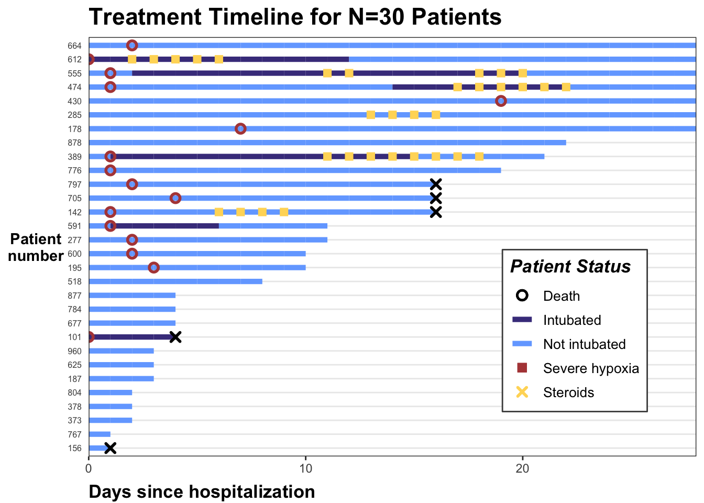

Using ggplot2 to create Treatment Timelines with Multiple Variables
R
data visualization
Author
Katherine Hoffman
Published
June 8, 2022
An R code walkthrough for treatment timelines or “swimmer” plots. These can help visualize treatment or measurement patterns, time-varying covariates, outcomes, and loss to follow-up in longitudinal data settings.
June 8, 2022.

This post walks through code to create a timeline in R using ggplot2. These types of plots can help visualize treatment or measurement patterns, time-varying covariates, outcomes, and loss to follow-up in longitudinal data settings.
Treatment timelines, or “swimmer plots”, are a visualization technique I find useful in exploring longitudinal data structures. A few years ago I shared how I make treatment timelines for a single treatment (categorical or continuous) in the post Patient Treatment Timelines for Longitudinal Survival Data.
Sometimes when I share these plots with collaborators, they ask me to add additional variables to the timelines. This post shows how to do that.
I’ll use a toy dataset on hospitalized COVID-19 patients, available to download on this Github repository. It is derived from a dataset from Electronic Health Record data during Spring 2020. This is a time period when there was large variation in provider practice in administering steroids, a type of drug that combats hyper-inflammation. Steroids are usually given to patients which exhibit an inflammatory profile; we will identify this using a threshold for low oxygen levels (severe hypoxia).
We will look at the treatment patterns of steroids as it relates to the timing of patients (1) reaching severe hypoxia and (2) being put on a ventilator (intubation). We will also include whether patients died. I used a similar figure in a recent manuscript on this topic, if you’re interested in learning more!
Exploring the data
The data set is in long format with one row per patient. Let’s first load the data set and libraries we’ll need, then look at the first 20 rows:
# install.packages(c("tidyverse","gt","RCurl","rmarkdown"))library(tidyverse)library(gt)library(rmarkdown)dat_long <-read_csv("https://raw.githubusercontent.com/kathoffman/steroids-trial-emulation/main/data/dat_trt_timeline.csv", col_types =list(id ="c", steroids ="c", death ="c", severe ="c"))
If we look at the first patient (id = 797), we can see they were in the hospital for 17 days, never intubated, never receive steroids, and ultimately die (death is 1 on the last day).
head(dat_long) |>paged_table()
We can plot all patients’ hospital length of stay, colored by intubation status using ggplot2’s geom_line():
dat_long |>ggplot(aes(x=day, y=id, col = intubation_status, group=id)) +geom_line() +theme_bw()
We can add our steroids column to the plot by adding a point designating whether steroids exposure was 1 (yes) or 0 (no) that day. We can see this results in points of two different colors on the lines of our plot. This can work just fine! …unless you want to add another variable to the timeline.
dat_long |>ggplot(aes(x=day, y=id, col = intubation_status, group=id)) +geom_point(aes(day, id, col = steroids)) +geom_line() +theme_bw()
Modify the data
We could edit the colors of the dots we don’t want so that they’re transparent (using NA), but when you have other non-mutually exclusive dots you want to show, it’s simpler to just edit the data instead. So, we will now edit our data so that our three binary columns are turned into three *_this_day column, where:
The value is NA if the observation did not experience that exposure/outcome that day (remember each day is a new row)
The value is the day if the observation did experience the exposure/outcome. This is to make our x axis easy to specify in ggplot2.
While we’re at it, let’s modify the patient’s IDs so that we can rearrange our plot by length of each individual’s timeline. To do this, we will reorder the factored id variable by a new variable max_day, or the length of time that patients are in the study.
From this point on I’ll save the plot as p and just keep adding onto it so you can see the new step.
We’ll see why we’re doing this in a second, but in creating this first iteration of p using geom_line() and geom_point(), we also want to set the col to match how we want the marker for steroids to appear in the legend. I’m also going to make minor edits to the size and shape of the point geometry right now, as well as the width of each timeline itself (also using the size argument).
p <- dat_swim |>ggplot() +geom_line(aes(x=day, y=id, col = intubation_status, group=id),size=1.8) +geom_point(aes(x=steroids_this_day, y=id, col="Steroids"), stroke=2, shape=15) +theme_bw()p
Let’s add hypoxia and death to the figure. We’ll use geom_point() again, and again specify legend names for the col and shape arguments, and modify the size and stroke of our point geometries.
p <- p +geom_point(aes(x=severe_this_day, y=id, col="Severe hypoxia"), size=2, stroke=1.5, shape=21) +geom_point(aes(x=death_this_day, y=id, col="Death"), size=2, stroke=1.5, shape=4) p
Note that we get warning messages that values with NA are removed. This is fine since we just created all those NAs! I’m going to set my options so that warnings are suppressed for future code outputs to keep this post tidy.
knitr::opts_chunk$set(message=F, warning=F)
Modify the colors and shapes
Next let’s start changing our color and shape scales. We can change colors using scale_color_manual() and and filling in the values argument with a vector where the names of the vector match the names in the col in our geom_point() aesthetics.
I define my cols in a vector outside the plotting code to keep everything cleaner. Note that the order we’re specifying here will continue throughout the rest of the plotting code!
# define colors for all geometries with a color argumentcols <-c("Severe hypoxia"="#b24745", # red"Intubated"="#483d8b", # navy"Not intubated"="#74aaff", # lighter blue"Steroids"="#ffd966", # gold"Death"="#000000") # black
After we set values = cols, the name argument is simply the title we want for our legend (I chose “Patient Status”).
p <- p +scale_color_manual(values = cols, name="Patient Status") p
Fix the Legend
You’ll notice that our legend does not match the changes we made to the shapes, size, or linetype right now. This is because our legend only contains information on the colors, because that’s all we’re mapping to the aesthetics of our geometries right now (in geom_point and geom_line. We can override the color legend aesthetics and still create a plot that shows correct and useful information.
We will do this by using the guides() function. We can control each aesthetic here. We will first override the colors legend with the code guide_legend(override.aes = list(...)).
This allows us to change the shapes of the color legend by specifying a vector with the shapes, size, and line types we want in the order the labels appear in the legend. If we don’t want a characteristic to appear on the legend, we will use NA.
I only want to show shapes for certain statuses (severe hypoxia, steroid administration, death), and not the intubation status of a patient, so I’ll set up my shape override vector accordingly. Note that the order in the legend follows the order of my color specification vector (cols).
shape_override <-c(21, NA, NA, 15, 4) # order matches `cols`:severe, intubation (yes/no), steroids, deathp +guides(color =guide_legend(override.aes =list(shape = shape_override) # modify the color legend to include shapes ) )
To remove the line through Death, Severe hypoxia, and Steroids in our legend, we can override the aesthetics for linetype with NA’s for those three labels. We will specify the default, linetype=1, for our intubation status color labels.
We can additionally override the stroke and size arguments to correspond to our point geometries.
Ok, the challenging parts are done! Now we can make some minor aesthetic edits using labs, scale_x_continuous(), and theme(). I won’t go into detail on these edits because they’re fairly self-explanatory, but check out the help files if you’re unsure what these arguments in theme do!
p <- p +labs(x="Days since hospitalization",y="Patient\nnumber",title="Treatment Timeline for N=30 Patients") +scale_x_continuous(expand=c(0,0)) +# remove extra white space theme(# text=element_text(family="Poppins", size=11),title =element_text(angle =0, vjust=.5, size=12, face="bold"),axis.title.y =element_text(angle =0, vjust=.5, size=12, face="bold"),axis.title.x =element_text(size=15, face="bold", vjust=-0.5, hjust=0),axis.text.y =element_text(size=6, hjust=1.5),axis.ticks.y =element_blank(),legend.position =c(0.8, 0.3),legend.title =element_text(colour="black", size=13, face=4),legend.text =element_text(colour="black", size=10),legend.background =element_rect(size=0.5, linetype="solid", colour ="gray30"),panel.grid.minor =element_blank(),panel.grid.major.x =element_blank() ) p
Hope this is helpful! As always let me know if you have any feedback or suggestions. If you’d like to copy-paste the code, here it is:
Just the Code
library(tidyverse)dat_long <-read_csv("https://raw.githubusercontent.com/kathoffman/steroids-trial-emulation/main/data/dat_trt_timeline.csv", col_types =list(id ="c", steroids ="c", death ="c", severe ="c"))# define colors for all geometries with a color argumentcols <-c("Severe hypoxia"="#b24745", # red"Intubated"="#483d8b", # navy"Not intubated"="#74aaff", # lighter blue"Steroids"="#ffd966", # gold"Death"="#000000") # black shape_override <-c(21, NA, NA, 15, 4) # order matches `cols`:severe, intubation (yes/no), steroids, deathline_override <-c(NA,1,1,NA,NA) # order matches `cols`:severe, intubation (yes/no), steroids, deathstroke_override <-c(1.2,1,1,1,1.4) # order matches `cols`:severe, intubation (yes/no), steroids, deathsize_override <-c(2.5,2.5,2.6,2.5,2) # order matches `cols`:severe, intubation (yes/no), steroids, death# modify swimmer data to 1) only show events if yes 2) have an id ordered by max follow updat_swim <- dat_long |>mutate(severe_this_day =case_when(severe ==1~ day),steroids_this_day =case_when(steroids ==1~ day),death_this_day =case_when(death ==1~ day)) |>group_by(id) |>mutate(max_day =max(day)) |>ungroup() |>mutate(id =fct_reorder(factor(id), max_day))dat_swim |>ggplot() +geom_line(aes(x=day, y=id, col = intubation_status, group=id),size=1.8) +geom_point(aes(x=steroids_this_day, y=id, col="Steroids"), shape=15, stroke=2) +geom_point(aes(x=severe_this_day, y=id, col="Severe hypoxia"), size=2, stroke=1.5, shape=21) +geom_point(aes(x=death_this_day, y=id, col="Death"), size=2, stroke=1.5, shape=4) +theme_bw() +scale_color_manual(values = cols, name="Patient Status") +guides(color =guide_legend(override.aes =list(stroke = stroke_override,shape = shape_override,linetype = line_override,size = size_override) ) )+labs(x="Days since hospitalization",y="Patient\nnumber",title="Treatment Timeline for N=30 Patients") +scale_x_continuous(expand=c(0,0)) +# remove extra white space theme(# text=element_text(family="Poppins", size=11),title =element_text(angle =0, vjust=.5, size=12, face="bold"),axis.title.y =element_text(angle =0, vjust=.5, size=12, face="bold"),axis.title.x =element_text(size=15, face="bold", vjust=-0.5, hjust=0),axis.text.y =element_text(size=6, hjust=1.5),axis.ticks.y =element_blank(),legend.position =c(0.8, 0.3),legend.title =element_text(colour="black", size=13, face=4),legend.text =element_text(colour="black", size=10),legend.background =element_rect(size=0.5, linetype="solid", colour ="gray30"),panel.grid.minor =element_blank(),panel.grid.major.x =element_blank() )
---title: "Using ggplot2 to create Treatment Timelines with Multiple Variables"author: "Katherine Hoffman"weight: 2date: 2022-06-08description: " "image: crop_swimmer.png categories: ["programming"]tags: ["R","ggplot2","swimmer plots","treatment timelines","longitudinal survival"]output: html_document: toc: true toc_float: true smart: false---An R code walkthrough for treatment timelines or "swimmer" plots. These can help visualize treatment or measurement patterns, time-varying covariates, outcomes, and loss to follow-up in longitudinal data settings.<!--more-->***June 8, 2022.***```{r setup, include=FALSE}knitr::opts_chunk$set(echo =TRUE, results ="asis")``````{r, echo=F, warning=F, message=F}library(tidyverse, warn.conflicts = F)# internal set upset.seed(7)``````{r include=F, echo=F, eval=F}dat_long <-readRDS(here::here("content/blog/trt-timelines/trt_timeline_data.rds"))id_key <-data.frame(new_id =factor(sample(100:999, size=length(unique(dat_long$id)))), id =1:length(unique(dat_long$id))) %>%filter(id ==1| id %in%sample(2:50, 29))dat_long <-readRDS(here::here("content/blog/trt-timelines/trt_timeline_data.rds")) |>right_join(id_key) |>select(id = new_id, everything(), -id)saveRDS(dat_long, here::here("content/blog/trt-timelines/trt_timeline_data_30.rds"))write_csv(dat_long, here::here("content/blog/trt-timelines/dat_trt_timeline.csv"))``````{r, echo=F, warning=F, message=F}library(tidyverse)library(gt)library(rmarkdown)dat_long <-read_csv("https://raw.githubusercontent.com/kathoffman/steroids-trial-emulation/main/data/dat_trt_timeline.csv", col_types =list(id ="c", steroids ="c", death ="c", severe ="c"))# define colors for all geometries with a color argumentcols <-c("Severe hypoxia"="#b24745", # red"Intubated"="#483d8b", # navy"Not intubated"="#74aaff", # lighter blue"Steroids"="#ffd966", # gold"Death"="#000000") # black shape_override <-c(21, NA, NA, 15, 4) # order matches `cols`:severe, intubation (yes/no), steroids, deathline_override <-c(NA,1,1,NA,NA) # order matches `cols`:severe, intubation (yes/no), steroids, deathstroke_override <-c(1.2,1,1,1,1.4) # order matches `cols`:severe, intubation (yes/no), steroids, deathsize_override <-c(2.5,2.5,2.6,2.5,2) # order matches `cols`:severe, intubation (yes/no), steroids, deathdat_swim <- dat_long |>mutate(severe_this_day =case_when(severe ==1~ day),steroids_this_day =case_when(steroids ==1~ day),death_this_day =case_when(death ==1~ day)) |>group_by(id) |>mutate(max_day =max(day)) |>ungroup() |>mutate(id =fct_reorder(factor(id), max_day))dat_swim |>ggplot(aes(y=id, group=id)) +theme_bw() +geom_line(aes(x=day,col = intubation_status,group=id),size=1.8) +geom_point(aes(x=steroids_this_day,col="Steroids"), stroke=2,shape=15) +geom_point(aes(x=severe_this_day,col="Severe hypoxia"),size=2,stroke=1.5,shape=21) +geom_point(aes(x=death_this_day,col="Death"),size=2,stroke=1.5,shape=4) +scale_color_manual(values = cols,name="Patient Status") +#BREAKguides(color =guide_legend(override.aes =list(stroke = stroke_override,size = size_override,shape = shape_override,linetype = line_override) )) +labs(x="Days since hospitalization",y="Patient\nnumber",title="Treatment Timeline for N=30 Patients") +scale_x_continuous(expand=c(0,0)) +# remove extra white space theme(title =element_text(angle =0, vjust=.5, size=14, face="bold"),axis.title.y =element_text(angle =0, vjust=.5, size=11, face="bold"),axis.title.x =element_text(size=13, face="bold", vjust=-0.5, hjust=0),axis.text.y =element_text(size=6, hjust=1.5),axis.ticks.y =element_blank(),legend.position =c(0.8, 0.3),legend.title =element_text(colour="black", size=13, face=4),legend.text =element_text(colour="black", size=10),legend.background =element_rect(size=0.5, linetype="solid", colour ="gray30"),panel.grid.minor =element_blank(),panel.grid.major.x =element_blank() ) ```This post walks through code to create a timeline in `R` using `ggplot2`. These types of plots can help visualize **treatment or measurement patterns**, **time-varying covariates**, **outcomes**, and **loss to follow-up** in longitudinal data settings.You can view a corresponding slide deck I made with {flipbookr} for the 2022 R/Medicine [\[here\]](https://kathoffman.github.io/swimmer-plots/slides.html#1), or you can [skip to the end of this post to just see the code](#just-the-code).# BackgroundTreatment timelines, or "swimmer plots", are a visualization technique I find useful in exploring longitudinal data structures. A few years ago I shared how I make treatment timelines for a single treatment (categorical or continuous) in the post [**Patient Treatment Timelines for Longitudinal Survival Data**](https://www.khstats.com/blog/trt-timelines/trt-timelines/).Sometimes when I share these plots with collaborators, they ask me to **add additional variables to the timelines**. This post shows how to do that.I'll use a toy dataset on hospitalized COVID-19 patients, available to download on this [Github repository](https://github.com/kathoffman/steroids-trial-emulation). It is derived from a dataset from Electronic Health Record data during Spring 2020. This is a time period when there was large variation in provider practice in administering steroids, a type of drug that combats hyper-inflammation. Steroids are usually given to patients which exhibit an inflammatory profile; we will identify this using a threshold for low oxygen levels (severe hypoxia).We will look at the treatment patterns of steroids as it relates to the timing of patients (1) reaching severe hypoxia and (2) being put on a ventilator (intubation). We will also include whether patients died. I used a similar figure in a [recent manuscript](https://www.medrxiv.org/content/10.1101/2022.05.27.22275037v3) on this topic, if you're interested in learning more!# Exploring the dataThe data set is in long format with one row per patient. Let's first load the data set and libraries we'll need, then look at the first 20 rows:```{r}# install.packages(c("tidyverse","gt","RCurl","rmarkdown"))library(tidyverse)library(gt)library(rmarkdown)dat_long <-read_csv("https://raw.githubusercontent.com/kathoffman/steroids-trial-emulation/main/data/dat_trt_timeline.csv", col_types =list(id ="c", steroids ="c", death ="c", severe ="c"))```If we look at the first patient (id = `r slice(dat_long, 1) |> pull(id)`), we can see they were in the hospital for `r dat_long |> filter(id == (slice(dat_long, 1) |> pull(id))) |> nrow()` days, never intubated, never receive steroids, and ultimately die (`death` is `1` on the last day).```{r}head(dat_long) |>paged_table()```We can plot all patients' hospital length of stay, colored by intubation status using `ggplot2`'s `geom_line()`:```{r}dat_long |>ggplot(aes(x=day, y=id, col = intubation_status, group=id)) +geom_line() +theme_bw()```We can add our `steroids` column to the plot by adding a point designating whether `steroids` exposure was `1` (yes) or `0` (no) that day. We can see this results in points of two different colors on the lines of our plot. [This can work just fine](https://www.khstats.com/blog/trt-timelines/trt-timelines/)! ...unless you want to add another variable to the timeline.```{r}dat_long |>ggplot(aes(x=day, y=id, col = intubation_status, group=id)) +geom_point(aes(day, id, col = steroids)) +geom_line() +theme_bw() ```# Modify the dataWe *could* edit the colors of the dots we don't want so that they're transparent (using `NA`), but when you have other non-mutually exclusive dots you want to show, it's simpler to just edit the data instead. So, we will now edit our data so that our three binary columns are turned into three `*_this_day` column, where:- The value is `NA` if the observation did not experience that exposure/outcome that day (remember each day is a new row)- The value is the `day` if the observation *did* experience the exposure/outcome. This is to make our `x` axis easy to specify in `ggplot2`.```{r, results="asis"}dat_swim <- dat_long |>mutate(severe_this_day =case_when(severe ==1~ day),steroids_this_day =case_when(steroids ==1~ day),death_this_day =case_when(death ==1~ day))```While we're at it, let's modify the patient's IDs so that we can rearrange our plot by length of each individual's timeline. To do this, we will reorder the factored `id` variable by a new variable `max_day`, or the length of time that patients are in the study.```{r}dat_swim <- dat_swim |>group_by(id) |>mutate(max_day =max(day)) |>ungroup() |>mutate(id =fct_reorder(factor(id), max_day))head(dat_swim) |>paged_table()```# Back to plottingNow, we can re-plot the steroids and intubation statuses using our new data. This time without all the `0` values for steroids showing.```{r}dat_swim |>ggplot() +geom_line(aes(x=day, y=id, col = intubation_status, group=id)) +geom_point(aes(x=steroids_this_day, y=id, col="Steroids", shape="Steroids")) +theme_bw()```From this point on I'll save the plot as `p` and just keep adding onto it so you can see the new step.We'll see why we're doing this in a second, but in creating this first iteration of `p` using `geom_line()` and `geom_point()`, we also want to set the `col` to match how we want the marker for steroids to appear in the legend. I'm also going to make minor edits to the `size` and `shape` of the point geometry right now, as well as the width of each timeline itself (also using the `size` argument).```{r}p <- dat_swim |>ggplot() +geom_line(aes(x=day, y=id, col = intubation_status, group=id),size=1.8) +geom_point(aes(x=steroids_this_day, y=id, col="Steroids"), stroke=2, shape=15) +theme_bw()p```Let's add hypoxia and death to the figure. We'll use `geom_point()` again, and again specify legend names for the `col` and `shape` arguments, and modify the `size` and `stroke` of our point geometries.```{r}p <- p +geom_point(aes(x=severe_this_day, y=id, col="Severe hypoxia"), size=2, stroke=1.5, shape=21) +geom_point(aes(x=death_this_day, y=id, col="Death"), size=2, stroke=1.5, shape=4) p```Note that we get warning messages that values with `NA` are removed. This is fine since we just created all those `NA`s! I'm going to set my options so that warnings are suppressed for future code outputs to keep this post tidy.```{r}knitr::opts_chunk$set(message=F, warning=F)```# Modify the colors and shapesNext let's start changing our color and shape scales. We can change colors using `scale_color_manual()` and and filling in the `values` argument with a vector where the **names of the vector match the names in the `col` in our `geom_point()` aesthetics.**I define my `cols` in a vector outside the plotting code to keep everything cleaner. Note that the order we're specifying here will continue throughout the rest of the plotting code!```{r}# define colors for all geometries with a color argumentcols <-c("Severe hypoxia"="#b24745", # red"Intubated"="#483d8b", # navy"Not intubated"="#74aaff", # lighter blue"Steroids"="#ffd966", # gold"Death"="#000000") # black ```After we set `values = cols`, the `name` argument is simply the title we want for our legend (I chose "Patient Status").```{r}p <- p +scale_color_manual(values = cols, name="Patient Status") p```# Fix the LegendYou'll notice that our legend does not match the changes we made to the shapes, size, or linetype right now. This is because our legend only contains information on the colors, because that's all we're mapping to the aesthetics of our geometries right now (in `geom_point` and `geom_line`. We can override the color legend aesthetics and still create a plot that shows correct and useful information.We will do this by using the `guides()` function. We can control each aesthetic here. We will first override the `colors` legend with the code `guide_legend(override.aes = list(...))`.This allows us to *change the shapes of the color legend* by specifying a vector with the shapes, size, and line types we want in the order the labels appear in the legend. If we don't want a characteristic to appear on the legend, we will use `NA`.I only want to show shapes for certain statuses (severe hypoxia, steroid administration, death), and not the intubation status of a patient, so I'll set up my shape override vector accordingly. Note that the order in the legend follows the order of my color specification vector (`cols`).```{r}shape_override <-c(21, NA, NA, 15, 4) # order matches `cols`:severe, intubation (yes/no), steroids, deathp +guides(color =guide_legend(override.aes =list(shape = shape_override) # modify the color legend to include shapes ) ) ```To remove the line through Death, Severe hypoxia, and Steroids in our legend, we can override the aesthetics for `linetype` with NA's for those three labels. We will specify the default, `linetype=1`, for our intubation status color labels.We can additionally override the stroke and size arguments to correspond to our point geometries.```{r}line_override <-c(NA,1,1,NA,NA) # order matches `cols`:severe, intubation (yes/no), steroids, deathstroke_override <-c(1.2,1,1,1,1.4) # order matches `cols`:severe, intubation (yes/no), steroids, deathsize_override <-c(2.5,2.5,2.6,2.5,2) # order matches `cols`:severe, intubation (yes/no), steroids, deathp <- p +guides(color =guide_legend(override.aes =list(stroke = stroke_override,shape = shape_override,linetype = line_override,size = size_override) ) )p```Ok, the challenging parts are done! Now we can make some minor aesthetic edits using `labs`, `scale_x_continuous()`, and `theme()`. I won't go into detail on these edits because they're fairly self-explanatory, but check out the help files if you're unsure what these arguments in theme do!```{r}p <- p +labs(x="Days since hospitalization",y="Patient\nnumber",title="Treatment Timeline for N=30 Patients") +scale_x_continuous(expand=c(0,0)) +# remove extra white space theme(# text=element_text(family="Poppins", size=11),title =element_text(angle =0, vjust=.5, size=12, face="bold"),axis.title.y =element_text(angle =0, vjust=.5, size=12, face="bold"),axis.title.x =element_text(size=15, face="bold", vjust=-0.5, hjust=0),axis.text.y =element_text(size=6, hjust=1.5),axis.ticks.y =element_blank(),legend.position =c(0.8, 0.3),legend.title =element_text(colour="black", size=13, face=4),legend.text =element_text(colour="black", size=10),legend.background =element_rect(size=0.5, linetype="solid", colour ="gray30"),panel.grid.minor =element_blank(),panel.grid.major.x =element_blank() ) p```Hope this is helpful! As always let me know if you have any feedback or suggestions. If you'd like to copy-paste the code, here it is:# Just the Code {#just-the-code}```{r, eval=F}library(tidyverse)dat_long <-read_csv("https://raw.githubusercontent.com/kathoffman/steroids-trial-emulation/main/data/dat_trt_timeline.csv", col_types =list(id ="c", steroids ="c", death ="c", severe ="c"))# define colors for all geometries with a color argumentcols <-c("Severe hypoxia"="#b24745", # red"Intubated"="#483d8b", # navy"Not intubated"="#74aaff", # lighter blue"Steroids"="#ffd966", # gold"Death"="#000000") # black shape_override <-c(21, NA, NA, 15, 4) # order matches `cols`:severe, intubation (yes/no), steroids, deathline_override <-c(NA,1,1,NA,NA) # order matches `cols`:severe, intubation (yes/no), steroids, deathstroke_override <-c(1.2,1,1,1,1.4) # order matches `cols`:severe, intubation (yes/no), steroids, deathsize_override <-c(2.5,2.5,2.6,2.5,2) # order matches `cols`:severe, intubation (yes/no), steroids, death# modify swimmer data to 1) only show events if yes 2) have an id ordered by max follow updat_swim <- dat_long |>mutate(severe_this_day =case_when(severe ==1~ day),steroids_this_day =case_when(steroids ==1~ day),death_this_day =case_when(death ==1~ day)) |>group_by(id) |>mutate(max_day =max(day)) |>ungroup() |>mutate(id =fct_reorder(factor(id), max_day))dat_swim |>ggplot() +geom_line(aes(x=day, y=id, col = intubation_status, group=id),size=1.8) +geom_point(aes(x=steroids_this_day, y=id, col="Steroids"), shape=15, stroke=2) +geom_point(aes(x=severe_this_day, y=id, col="Severe hypoxia"), size=2, stroke=1.5, shape=21) +geom_point(aes(x=death_this_day, y=id, col="Death"), size=2, stroke=1.5, shape=4) +theme_bw() +scale_color_manual(values = cols, name="Patient Status") +guides(color =guide_legend(override.aes =list(stroke = stroke_override,shape = shape_override,linetype = line_override,size = size_override) ) )+labs(x="Days since hospitalization",y="Patient\nnumber",title="Treatment Timeline for N=30 Patients") +scale_x_continuous(expand=c(0,0)) +# remove extra white space theme(# text=element_text(family="Poppins", size=11),title =element_text(angle =0, vjust=.5, size=12, face="bold"),axis.title.y =element_text(angle =0, vjust=.5, size=12, face="bold"),axis.title.x =element_text(size=15, face="bold", vjust=-0.5, hjust=0),axis.text.y =element_text(size=6, hjust=1.5),axis.ticks.y =element_blank(),legend.position =c(0.8, 0.3),legend.title =element_text(colour="black", size=13, face=4),legend.text =element_text(colour="black", size=10),legend.background =element_rect(size=0.5, linetype="solid", colour ="gray30"),panel.grid.minor =element_blank(),panel.grid.major.x =element_blank() ) ```# Session Info```{r, results='markup'}sessionInfo()```